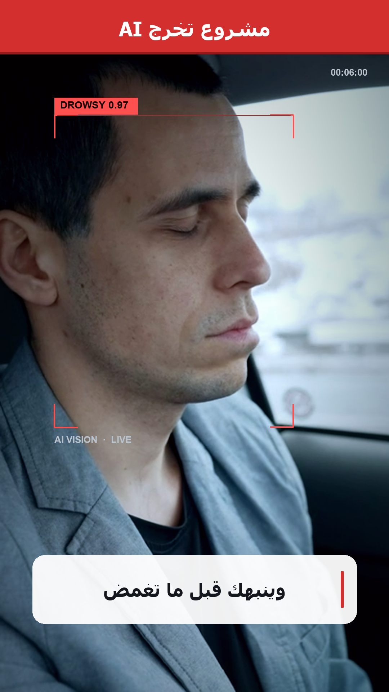
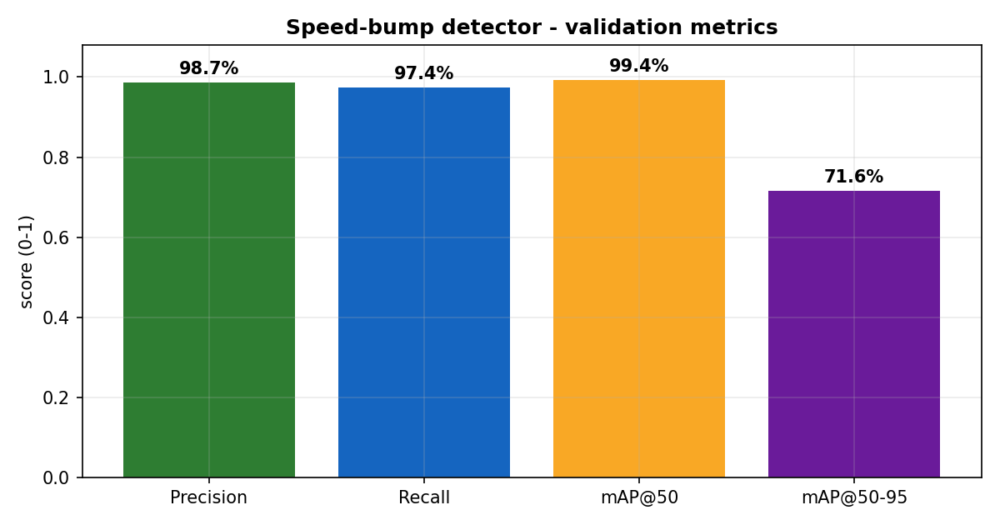
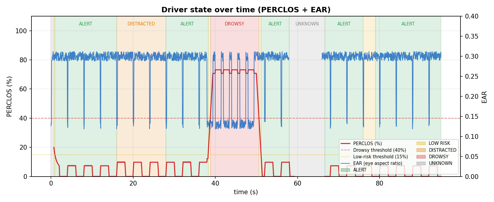
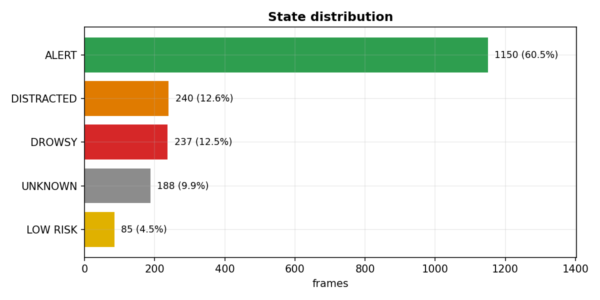

المشكلة، الحل، والمخرجات — من غير تفاصيل تقنية.
• النعاس: لحظة إغلاق العين لثانيتين كفاية لحادث.
• المطبات: غير معلومة وغير موحّدة الشكل.
• الإشارة الحمراء: السائق المشتّت يعدّيها بدون ما ياخد باله.
• كاميرا واحدة + ذكاء اصطناعي بيقرأ الوش والعين.
• موديل بيكشف المطبات على الطريق.
• عدّاد للإشارة الحمراء + تنبيه فوري (صوت + ليد + اهتزاز).
نظام واحد بيجمع رؤية حاسوبية (قراءة السائق والطريق) مع قرار فوري وتنبيه مادي عن طريق الأردوينو — عشان ينبّه قبل ما الحادث يحصل، مش بعده.
| المكوّن | وظيفته | التقنية |
|---|---|---|
| مراقبة السائق | قياس فتح العين، التثاؤب، ميل الرأس، والالتفات | MediaPipe Face Mesh |
| قرار النعاس | تحويل القياسات لحالة واحدة واضحة كل لحظة | قواعد + PERCLOS |
| كشف المطبات | تحديد مكان المطب في الصورة قبل الوصول له | YOLOv8 (موديل مدرَّب) |
| إشارة المرور | تمييز الأحمر/الأخضر + عدّاد مدة الوقوف | YOLOv8 + تحليل لون |
| التنبيه | ليد + بازر + اهتزاز حسب خطورة الحالة | Arduino + Serial |
| التسجيل والتقييم | حفظ كل لحظة في CSV وحساب الدقة | Python + Pandas |
حالة كل جزء بشكل صريح — إيه اللي خلص، وإيه اللي لسه.
| المكوّن | الحالة | الدليل / الملاحظات |
|---|---|---|
| كشف النعاس (العين + الرأس) | مكتمل | شغال لايف على الكاميرا + داشبورد مستقر |
| PERCLOS بالوقت | مكتمل | نافذة 2 ثانية + نسبة تغطية + اختبارات |
| محرك القرار (5 حالات) | مكتمل | ALERT / LOW RISK / DISTRACTED / DROWSY / UNKNOWN |
| موديل المطبات YOLOv8 | مكتمل | mAP@50 = 99.4% على 277 صورة تحقق |
| كشف إشارة المرور + العدّاد | مكتمل | دوال منفصلة + اختبارات بدون كاميرا |
| بروتوكول الأردوينو | مكتمل | 5 أوامر + منع اهتزاز الإنذار (Debounce) |
| التسجيل والتقييم | مكتمل | CSV لكل فريم + Precision / Recall / Latency |
| تقرير التقييم | مكتمل | report.md + 3 رسوم بيانية |
| الفيديو التعريفي | عينة جاهزة | 10 ثواني بأسلوب الريفيرنس، والفيديو الكامل لاحقًا |
| تجميع الهاردوير النهائي | قيد التنفيذ | الكود جاهز — التجربة المجمّعة مع الزميل |
| اختبار المطبات ميدانيًا | متبقي | محتاج ~40 صورة حقيقية من الطريق |
| حساسات MPU6050 / MQ-3 | متبقي | قرار الشراء والتركيب |
كل حاجة في مكانها: قرار واحد، رؤية واحدة، هاردوير واحد… عشان أي حد يلاقي حاجته بسرعة.
DrowsyGuard-AI-DEPI-main/ │ ├── config.py # كل الأرقام والعتبات في مكان واحد ├── main.py # نقطة التشغيل (سطر واحد) ├── dashboard.py # الواجهة الرسومية │ ├── ai/ # الدماغ: القياسات والقرار │ ├── features.py # EAR / MAR / ميل الرأس │ ├── perclos.py # نسبة إغلاق العين بالوقت │ ├── drowsiness.py # تحويل القياسات لحالة │ └── attention.py # مؤشر انتباه 0-100 │ ├── vision/ # العين: الكاميرا والكشف │ ├── camera.py # كاميرا + إعادة اتصال │ ├── face_detector.py # MediaPipe + اختيار السواق │ └── road_scene.py # مطبات + إشارة مرور │ ├── hardware/ # الأوامر الخارجية │ └── protocol.py # 5 أوامر + Debounce ├── arduino_bridge/ │ └── arduino_bridge.ino # كود الأردوينو │ ├── data/ # التسجيل والتقييم │ ├── logger.py # CSV + سجل الأحداث │ └── evaluate.py # Precision / Recall / Latency │ ├── tests/ # 9 ملفات — 99 اختبار ├── tools/ # محاكاة / تقرير / فيديو / داتاسيت ├── notebooks/ # تدريب الموديل على Kaggle ├── report/ # تقرير التقييم + الرسوم └── demo_video/ # الفيديو التعريفي
| المبدأ | الفايدة العملية |
|---|---|
| كل حاجة في مكانها | ملف واحد بيعمل حاجة واحدة، فالتعديل مبيخربش حاجة تانية |
| فصل الرؤية عن القرار | نقدر نختبر القرار بدون كاميرا، ونجرّب موديل جديد لوحده |
| أرقام في ملف واحد | تغيير حساسية النظام = تعديل رقم في config.py بس |
| اختبارات مستقلة | أي تعديل بيتم التأكد منه فورًا قبل التجربة على الجهاز |
بياخد نقاط الوش ويحوّلها لأرقام… والأرقام تتحوّل لقرار.
بياخد 468 نقطة على الوش ويحسب منها: EAR (نسبة فتح العين)، MAR (فتحة البق = تثاؤب)، ميل الرأس (النفس بينزل تحت خط العين)، والالتفات (بُعد الأنف عن منتصف الوش). لو القياس غلط أو الوش مش واضح بيرجّع None — مش صفر — عشان النظام ميفتكرش إن العين مفتوحة.
PERCLOS = نسبة الوقت اللي كانت العين مقفولة فيه خلال آخر 2 ثانية. الحساب بالوقت الحقيقي مش بعدد الفريمات، فلو الكاميرا بطّلت النتيجة تفضل صح. وبيقول نسبة التغطية (Coverage): لو القياسات قليلة، الحالة تبقى UNKNOWN مش إنذار كاذب.
DROWSY لو: PERCLOS ≥ 40% — أو الرأس نازل مع إغلاق عين — أو تثاؤبين في 90 ثانية.
DISTRACTED لو الرأس ملفوف بعيد عن الطريق لمدة كافية.
LOW RISK لو PERCLOS بين 15% و40% أو تثاؤب حالي.
ALERT لو العين مفتوحة والرأس مستقيم. UNKNOWN لو الوش مش ظاهر.
رقم واحد بسيط يعرض للسائق: بيبدأ من 100 وينقص مع إغلاق العين، والرأس النازل (−10)، والالتفات (−15)، والتثاؤب (−8). وفيه سقوف: النعاس ≤ 35، الالتفات ≤ 55.
الكاميرا، الوش، والطريق. كله معزول عن باقي النظام عشان يتختبر لوحده.
بيفتح أول كاميرا شغالة، بيسخّنها (قراءة كام فريم)، ولو الكاميرا قطعت بيحاول يرجّعها لوحده بدل ما البرنامج يقع. الـDashboard بيطلب «فريم» وهو مش مسؤول عن أي تفاصيل تقنية.
بيستخدم MediaPipe Face Mesh ويرجّع نقاط الوش كأرقام عادية (Numpy) عشان باقي الكود ما يعتمدش على مكتبة معينة. ولو فيه أكتر من وش، بيختار السواق: أكبر وش + أقرب لمكان السواق (في مصر: ناحية اليمين في وضع المراية).
• TrafficLightDetector: موديل YOLO جاهز بيعرف إشارات المرور، ولونه بيتحدد بدالة
light_state() (أحمر/أصفر/أخضر/غير معروف) من لون الجزء المضيء.
• BumpDetector: موديل bump_model.pt مدرَّب عندنا على فئة واحدة: مطب.
• RedLightTimer: بيحسب ثواني الاستمرار على الأحمر، ويصفّر العدّاد أول ما الإشارة تتغيّر.
لأن المطب مش «شيء» ثابت الشكل زي العربية أو الشخص. الموديل العام (COCO) مبيعرفوش خالص. عشان كده عملنا داتاسيت من صور طرق حقيقية، ودرّبنا موديل مخصوص، وحوّلناه لفئة واحدة (0 = مطب) عشان يبقى سريع ودقيق.
| المرحلة | الأداة | المخرج |
|---|---|---|
| تجهيز الداتاسيت | tools/prepare_bump_dataset.py | صور + ليبلز + data.yaml |
| التدريب (GPU) | Kaggle + notebook | bump_model.pt |
| الاستخدام | yolo_phase2.py | بوكس على المطب في الفيديو |
إزاي القرار بيوصل للسواق، وإزاي بنحفظ ونقيّم كل لحظة.
| الأمر | الحالة | رد فعل الأردوينو |
|---|---|---|
| 0 | آمن | ليد أخضر — بدون صوت — الموتور شغال |
| 1 | خطر منخفض | ليد أصفر + بيب خفيف + اهتزاز 30% |
| 2 | نعاس (DROWSY) | ليد أحمر + إنذار عالي + اهتزاز 100% + إيقاف الموتور |
| 3 | التفات (DISTRACTED) | ليد أصفر وامض + بيب مزدوج + اهتزاز 60% |
| N | وش غير ظاهر | ليد أصفر وامض ببطء — بدون صوت |
LevelDebouncer: الحالة لازم تفضل ثابتة 5 فريمات قبل ما تتبعت، عشان الإنذار ميرفرفش بين حالة وحالة في لمح البصر.
بيسجّل كل فريم (القياسات + الحالة) في CSV بشكل مخزّن مؤقتًا، فالكتابة على القرص مبطّأش الفيديو. وفيه سجل أحداث مقروء للإنذارات.
يحسب Precision / Recall / F1 / نسبة الإنذارات الكاذبة / التغطية / زمن الاكتشاف — على أي ملف مُعلَّم.
| الأداة | بتعمل إيه |
|---|---|
| simulate_session.py | جلسة 95 ثانية مكتوبة، بتستخدم نفس المحرك الحقيقي عشان التقرير يبقى قابل للتكرار |
| make_report.py | يبني تقرير التقييم + الرسوم البيانية من نتائج الموديل والجلسة |
| prepare_bump_dataset.py | يفلتر داتاسيت ويحوّله لفئة واحدة (مطب) ويقسّمه تدريب/تحقق |
| make_video.py | الفيديو التعريفي 9:16 بأسلوب الريفيرنس |
إزاي الصورة بتتحوّل لحالة… والحالة بتتحوّل لإنذار.
لو حافظت الجدول ده، تبقى فاهم كل حاجة في المشروع.
| الجزء | وظيفته | بيشتغل إزاي | الملف |
|---|---|---|---|
| الإعدادات | كل الأرقام في مكان واحد | عتبات العين والنعاس والالتفات والكاميرا والسيريال | config.py |
| الواجهة | شاشة المشروع | كاميرا لايف + الحالة + EAR/MAR + إنذارات + تسجيل | dashboard.py |
| قياسات الوش | تحويل النقاط لأرقام | EAR للعين، MAR للتثاؤب، نسب ميل الرأس والالتفات | ai/features.py |
| PERCLOS | نسبة إغلاق العين | نافذة زمنية 2 ثانية + تجاهل القياسات الغلط | ai/perclos.py |
| القرار | تحديد حالة السائق | قواعد ثابتة على PERCLOS + الرأس + التثاؤب | ai/drowsiness.py |
| الانتباه | رقم 0–100 للسائق | 100 ناقص خصومات حسب كل مؤشر | ai/attention.py |
| الكاميرا | تغذية الصورة | فتح + تسخين + إعادة اتصال عند القطع | vision/camera.py |
| كشف الوش | تحديد السواق | MediaPipe + اختيار أكبر وش قريب من مكان السواق | vision/face_detector.py |
| الطريق | مطبات وإشارة مرور | YOLO للمطبات + YOLO للإشارات + تحليل اللون والعدّاد | vision/road_scene.py |
| الأوامر | التحكم في الهاردوير | 5 أوامر (0/1/2/3/N) + تثبيت الحالة 5 فريمات | hardware/protocol.py |
| الأردوينو | التنبيه المادي | ليد + بازر + اهتزاز + إيقاف الموتور عند النعاس | arduino_bridge.ino |
| التسجيل | حفظ الجلسة | CSV لكل فريم (مخزّن) + سجل أحداث | data/logger.py |
| التقييم | قياس دقة النظام | Precision / Recall / F1 / إنذارات كاذبة / زمن اكتشاف | data/evaluate.py |
| الأدوات | توليد المخرجات | محاكاة جلسة + تقرير + فيديو + داتاسيت | tools/ |
| الاختبارات | حماية الكود | 99 اختبار على القرار والقياسات والبروتوكول والتقرير | tests/ |
كل رقم هنا له مصدر قابل لإعادة التشغيل.
| البند | القيمة |
|---|---|
| الموديل الأساسي | YOLOv8n — صورة 640 — 50 Epoch |
| بيانات التحقق | 277 صورة / 305 حالة مطب |
| الفئة | فئة واحدة: speedbump |
| حجم الموديل | 6.35 MB (سريع على CPU) |

لأنها بتقيس دقة حدود البوكس عند كل نسب التداخل من 50% لـ95%، وده أصعب بكتير من مجرد «هل كشف المطب ولا لأ». الرقم 71.6% كويس جدًا لموديل صغير على فئة واحدة.
جلسة 95 ثانية بسيناريو ثابت — القياسات والقرار من محرك المشروع الحقيقي.

| الحالة | النسبة |
|---|---|
| ALERT | 60.5% |
| DISTRACTED | 12.6% |
| DROWSY | 12.5% |
| UNKNOWN | 9.9% |
| LOW RISK | 4.5% |

| المؤشر | القيمة | معناه |
|---|---|---|
| متوسط PERCLOS | 13.8% | السواق طبيعي في أغلب الوقت |
| أقصى PERCLOS | 73.2% | لحظة نعاس حقيقية اتكشفت |
| متوسط الانتباه | 78 / 100 | مستوى جيد مع فترات انخفاض |
الاعتراف بالحدود + خطة واضحة = ثقة أعلى من ادعاء الكمال.
| النقطة | التفصيل | الأثر |
|---|---|---|
| اختبار المطبات ميدانيًا | الموديل متدرّب ومقيّم، لكن بدون صور من طريقنا | ثقة أقل في الواقع |
| دمج الهاردوير | البروتوكول جاهز — التجميع الفعلي مع الزميل | العرض المادي لسه |
| حساسات إضافية | MPU6050 (اهتزاز/ميل) و MQ-3 (كحول) | لم تُضَف بعد |
| ظروف صعبة | ليل / شمس مباشرة / نضارة شمسية | دقة أقل |
| مسارين منفصلين | النعاس في الداشبورد، والطريق في سكريبت مستقل | محتاج شاشة واحدة |
| الأسبوع | الشغل | المخرج |
|---|---|---|
| الأول | تصوير ~40 صورة مطبات من الطريق + تقييم الموديل عليها | رقم دقة واقعي |
| الثاني | تجميع الأردوينو + تجربة الأمر 0/1/2/3/N على الجهاز | عرض مادي شغال |
| الثالث | شاشة واحدة تجمع النعاس + المطبات + الإشارة | نسخة نهائية |
| الرابع | الفيديو الكامل 45–60 ثانية + بروفة العرض | تسليم جاهز |
لغة بسيطة لأي مصطلح ممكن يتسأل عنه.
| المصطلح | يعني إيه بالمصري |
|---|---|
| AI (ذكاء اصطناعي) | برنامج بيتعلم من أمثلة بدل ما نكتبله كل الاحتمالات بإيدينا |
| MediaPipe Face Mesh | مكتبة بترسم 468 نقطة على الوش من صورة الكاميرا |
| EAR | نسبة فتح العين: رقم بيصغر لما العين تقفل |
| MAR | نسبة فتح البق: بيكبر لما تتثاوب |
| PERCLOS | نسبة الوقت اللي كانت العين مقفولة فيه خلال فترة — المعيار العلمي للنعاس |
| YOLO | موديل بيكشف الأجسام في الصورة ويحدد مكانها بسرعة (لحظيًا) |
| Precision | لما النظام يقول «فيه مطب»، بيبقى صح قد إيه؟ (98.7%) |
| Recall | من كل المطبات الحقيقية، كشف كام واحدة؟ (97.4%) |
| mAP@50 | مقياس دقة الكشف عند تداخل 50% بين البوكس والحقيقة |
| Debounce | تثبيت الحالة كام فريم قبل التنفيذ عشان الإنذار ميرفرفش |
| Serial | خط اتصال بسيط بين الكمبيوتر والأردوينو |
| UNKNOWN | حالة «مش قادر أقيس» — مش إنذار ومش أمان |
كل إجابة في سطرين — قولها بثقة وبدون حفظ حرفي.
قول الكلام ده بالترتيب وأنت بتفتح البرنامج.
«المشروع اسمه DrowsyGuard AI. بيعالج ٣ أسباب رئيسية للحوادث: نعاس السواق، المطبات، وتخطي الإشارة الحمراء. الهدف إن النظام ينبّه قبل الحادث، مش يسجّله.»
«الكاميرا بتقرأ 468 نقطة على الوش. منها بنحسب فتح العين EAR، والتثاؤب MAR، وميل الرأس. وبعدين نحسب PERCLOS: نسبة الوقت اللي كانت العين مقفولة فيه في آخر ثانيتين. لو زادت عن 40%، الحالة تبقى DROWSY، والأردوينو بيشغّل إنذار ويهدّي العربية.»
«موديل YOLOv8 مدرَّب عندنا على فئة واحدة: مطب — بدقة 98.7% و99.4% mAP@50. وبنفس الفكرة بنكشف إشارة المرور، وفيه عدّاد بيحسب مدة الاستمرار على الأحمر.»
«فيه 99 اختبار آلي، وتقرير تقييم فيه منحنيات التدريب وخط زمني لجلسة 95 ثانية، وكل الأرقام قابلة لإعادة التشغيل بأمر واحد.»
«الناقص هو التحقق الميداني وتجميع الهاردوير، ومخطط له في ٤ أسابيع: تصوير صور مطبات حقيقية، تجميع الأردوينو، شاشة واحدة، والفيديو النهائي.»
«الفكرة مش جهاز جديد، لكن طبقة أمان ذكية تقدر تتضاف لأي عربية بكاميرا.»